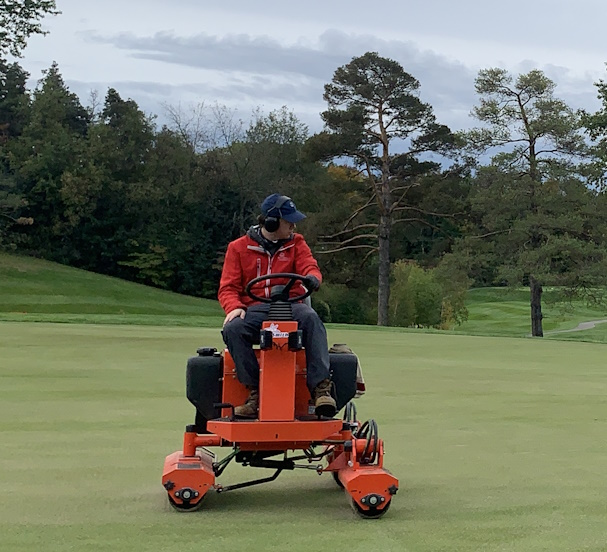

September 2016 - April 2019
Club Volunteer / Ice Prepper - Unnamed Curling Club - West Bay, Ontario
Assisted in the maintenance of the curling facility in the areas of ice
maintenance, housekeeping and grounds maintenance.
2021 - 2023 (Summers May to September)
Turf Maintenance - Real Golf Course & Real Country Club - West Bay, Ontario
Performed daily maintenance of golf course greens and bunkers using various
turf equipment and tools. Tasks included: cutting grass, raking bunkers,
blowing debris, sodding, trimming naturalized areas and assisting in general
course cleanup. Assisted in providing training and direction to new employees.
Presented great work ethic which lead to being requested to return for another season.
|  |
| Me using a piece of tuf maintenance equipment known as a "Roller" that is used to roll out the greens to close holes from aeration or create a faster green |